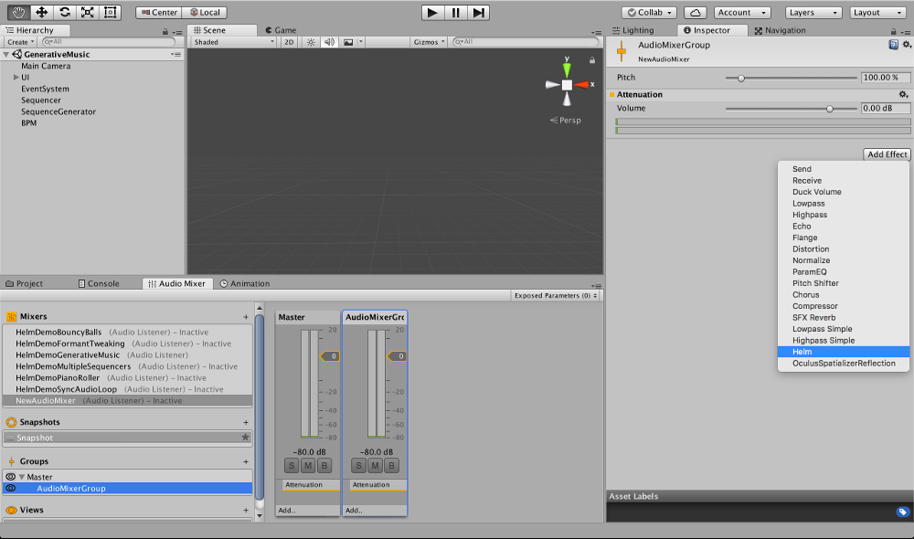

Thank you for purchasing Audio Helm! Audio Helm is a live audio synthesizer, sequencer and sampler for Unity that gives you the tools to create dynamic sound effects and generative music for your game.
There are three main components of Audio Helm. The native synthesizer, the sampler and the sequencer.
The synthesizer generates dynamic audio live, no samples or recordings required. It runs as a native plugin to ensure low latency, high performance, mobile ready audio. Download the standalone synth now (free or pay what you want) to browse and create synth patches you can import into your game.
The sampler takes an audio sample or recording and can play it back at different speeds to create musical pitches. Using different keyzones you can create a full spectrum piano sampler with Audio Helm comes with 4 drum machines each with a separate sample bank.
The sequencer is a tool for creating musical patterns and rhythms by playing synthesizer or sampler notes over time. You can create your own patterns inside Unity's Inspector or create them live from code to generate procedural music.
Since the synthesizer is a native audio plugin, you create a synth instance on an Audio Mixer Group. In the Audio Mixer window, create an Audio Mixer Group by clicking the + icon next to the Groups section. Call it AudioMixerGroup. Now in the Inspector window, click Add Effect and select Helm in the drop down to create the synth instance.
Once Helm is initialized you'll see a graphical piano and a Folder/Patch browser in the Inspector window. To hear how it sounds we'll need to connect it to an AudioSource in our scene.
Open a new scene and create a new object, call it Synth. Click on the Synth object and in the Inspector window, click on Add Component. Select Audio Helm - Helm Controller.
Once the HelmController component is created, you will see another graphical keyboard. It also added and initialized an AudioSource component to the Synth object.
We now set the Output of this AudioSource to the AudioMixerGroup that our synth is running on.
Now play the scene! If the Synth object is selected, you can click on the graphical keyboard in the HelmController component to play the synth. While your scene is playing, go click on the AudioMixerGroup that has your Helm instance. In the inspector, click Edit in Playmode and you can now select other patches from the browser below.
To create your own custom sounds you use the standalone version of Helm. Standalone Helm is to synth patches as Photoshop is to images or Maya is to 3D models. Standalone Helm is pay what you want (so you can pay nothing). Download standalone Helm to get started creating custom patches
Once standalone Helm is installed. You can double click on any of the patches in the Unity Project window at: Assets - Helm - Presets. This will open the standalone Helm with that patch loaded. You can change knobs and sliders on the window to change how the patch sounds. You can press Cmd+s(Mac) or Ctrl+s(Windows) to resave the patch or click the "Export" button in the top left to export the patch as a different file.
To learn how to create patches in Helm you can read the standalone Helm manual or watch the standalone Helm tutorial videos.
I'm not getting any sounds through the native synthesizer.
Make sure the HelmController in your scene is active, the AudioSource is pointing to the correct AudioMixerGroup and that the channel on the HelmController/Sequencer matches the channel on the Helm instance on your AudioMixerGroup.
The synth plugin is using up too much CPU, what do I do?
First thing to try is lowering the polyphony setting in the patches your are using as low as you can go with getting the right effect you want. This is especially true on mobile. Next thing to try is make sure there are no extraneous instances running. If there are still issues please email me at: matthewtytel@gmail.com